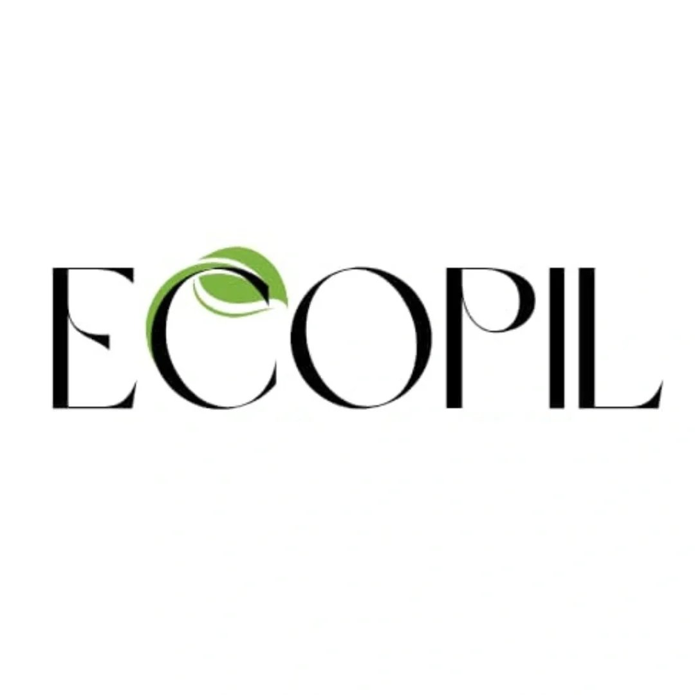
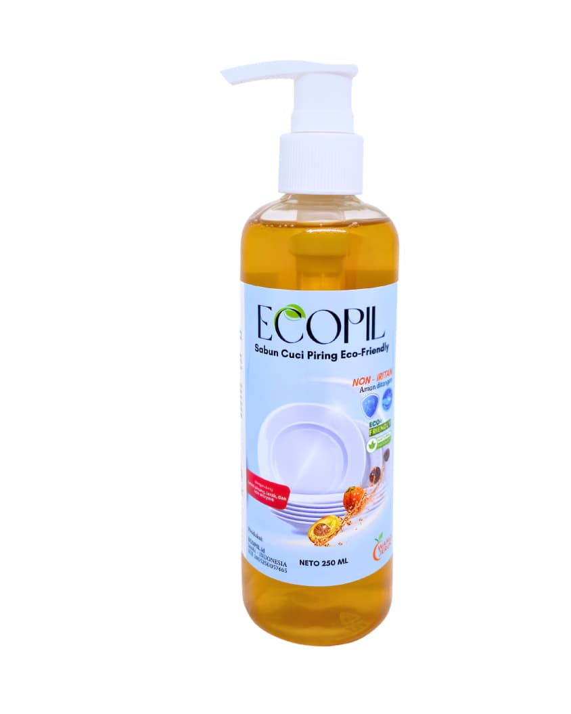
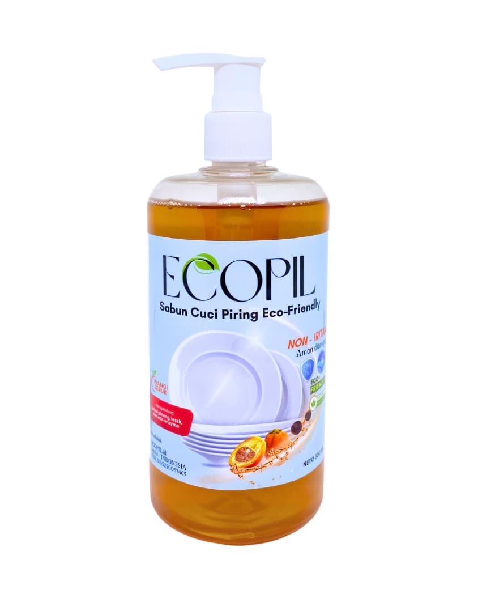

ECOPIL diformulasikan dari limbah sabut pinang, lerak, dan eco-enzyme. Bebas SLS, tanpa pewarna & pewangi buatan — lembut di tangan, tuntas melawan noda membandel.
Dibuat dari bahan alami — sabut pinang & lerak — tanpa bahan kimia berbahaya bagi ekosistem air.
Formula non-SLS tanpa pewarna & pewangi buatan, sehingga lembut dan tidak menyebabkan iritasi.
Diperkaya eco-enzyme yang tuntas mengangkat lemak dan noda membandel tanpa residu licin.

Ukuran hemat, pas untuk keluarga kecil. Formula tanpa SLS, aman untuk kulit sensitif.

Membersihkan lebih banyak, tetap ramah lingkungan. Cocok untuk pemakaian harian.
Cuci piring jadi lebih bersih dan tangan tidak kering. Recommend banget!
Wanginya lembut dan alami, tidak menyengat. Anak saya yang alergi pun aman pakai ini.
Sebagai peneliti lingkungan, saya suka bahwa ECOPIL benar-benar terurai secara alami. Konsisten kualitasnya.
Jalan Sunan Bonang No.54, RT.18/RW.5, Simpang III Sipin, Kota Baru, Jambi
09.00 – 17.00 WIB (Senin - Sabtu)